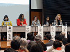

イベント
-  国際シンポジウム「世界のHPVワクチン被害は今」成功裏に終了しました
 シンポジウム 「子宮頸がんワクチン」問題を考える −海外からの報告を踏まえて−
シンポジウム 「子宮頸がんワクチン」問題を考える −海外からの報告を踏まえて− シンポジウム「医薬品の安全監視を考える〜『子宮頸がんワクチン』被害からの問題提起」
シンポジウム「医薬品の安全監視を考える〜『子宮頸がんワクチン』被害からの問題提起」
- 薬害オンブズパースン会議
- タイアップグループ
- 2019-10-02
- 第21回薬害根絶フォーラム
- 2019-07-23
- 2019年第20回薬害根絶デー（東京）
- 2019-07-10
- ２０１９年薬害根絶デーｉｎ札幌のご案内
- 2019-02-04
- タイアップ札幌総会20周年記念講演「わかりやすい HPVワクチン薬害 最新情報」
- 2018-03-26
- 国際シンポジウム「世界のHPVワクチン被害は今」成功裏に終了しました
- 2018-01-24
- 国際シンポジウム「世界のHPVワクチン被害は今」
- 2015-11-23
- シンポジウム 「子宮頸がんワクチン」問題を考える −海外からの報告を踏まえて−
- 2015-03-30
- 子宮頸がんワクチン副反応被害問題の 全面解決を求める院内集会
- 2014-07-27
- シンポジウム「医薬品の安全監視を考える〜『子宮頸がんワクチン』被害からの問題提起」
- 2014-06-02
- 院内集会「子宮頸がんワクチン ・ 聞いて下さい！被害者の声」開催しました
- 2014-01-27
- 「子宮頸がんワクチン」定期接種の積極推奨再開に反対する院内緊急集会
トピックス
- 薬害オンブズパースン会議
- タイアップグループ
- 2019-04-08
- 「ゾフルーザと先駆け審査指定制度に関する要望書」提出
- 2019-03-12
- 「薬機法改正に関する意見書」公表
- 2018-11-08
- 注目情報更新−コクラン−利益相反問題に揺れる組織は沈みゆく船か−、ほか5件
- 2018-08-13
- コクランレビューに対する批判的見解をコクランに送付
- 2018-07-02
- 注目情報更新−「医学教科書の執筆者が読者に金銭的利益相反を開示していない」、ほか1件
- 2018-06-11
- 「『名古屋市子宮頸がん予防接種調査』に関する鈴木貞夫論文についての見解」発表
- 2018-06-07
- HPV ワクチンに関するコクラン・レビューに対する批判的見解
- 2018-05-29
- 「条件付き早期承認制度に関する意見書」提出
- 2018-05-10
- 国際シンポジウム「世界のHPVワクチン被害は今」ビデオダイジェスト版配信開始
- 2018-04-26
- 国際シンポジウム「世界のHPVワクチン被害は今」ビデオ配信開始
- 2018-04-26
- 「ＨＰＶワクチンに関する共同宣言2018」発表
- 2018-03-26
- 国際シンポジウム「世界のHPVワクチン被害は今」成功裏に終了しました
- 2018-01-24
- 国際シンポジウム「世界のHPVワクチン被害は今」
- 2017-11-02
- 「ベンゾジアゼピン系薬物の『使用上の注意』改訂に対する意見書」提出
- 2017-11-01
- 「副反応検討部会等の開催案内のあり方について」提出
- 2017-08-31
- 「第12回薬事規制当局サミット等に関する要望書」提出
- 2017-07-18
- ２０１７年６月１１日付産経新聞朝刊の一面記事について書面送付
- 2017-06-12
- 論文「日本におけるHPVワクチン有害反応の教訓：医療倫理学的観点」、IJME誌に掲載
- 2016-11-02
- 「『子宮頸がん予防ワクチンに関する意見交換会』に関する質問書」提出
- 2016-05-12
- Ｂ型肝炎ワクチンの定期接種化等に反対する意見書を提出
- 2016-05-11
- 「化血研による不正製造問題に関する要望書」を提出
- 2016-03-03
- 「プラザキサ（ダビガトラン）に関する意見書」を提出
- 2015-12-17
- 「『名古屋市子宮頸がん予防接種調査 解析結果（速報）』に関する意見書」を提出
- 2015-12-01
- 「子宮頸がんワクチンの有効性と安全性の評価に関する疫学研究」に関する意見書を提出
- 2015-11-23
- シンポジウム 「子宮頸がんワクチン」問題を考える −海外からの報告を踏まえて−
- 2015-11-11
- 「『医薬品の臨床試験の実施の基準 に関する省令』一部改正の骨子（案）に対する意見」を提出
- 2015-10-28
- 「ベンゾジアゼピン系薬物に関する要望書」を提出
- 2015-04-23
- 「『患者申出療養』に関する見解」を公表
- 2015-04-21
- 「『ＨＰＶＪＡＰＡＮ』声明の問題点に関する見解」を公表
- 2015-04-01
- 「ＨＰＶワクチン（子宮頸がんワクチン）副反応被害報告集 第２集」掲載
- 2015-03-30
- 子宮頸がんワクチン副反応被害問題の 全面解決を求める院内集会
- 2015-02-28
- 「医法研・被験者の健康被害補償に関するガイドライン(改定案)」に関する意見を提出
- 2015-02-26
- ＨＰＶワクチンメーカーによるコード違反被疑事案に関する苦情申立て
- 2014-12-25
- 薬事分科会審議参加規程の見直しを再度要望
- 2014-09-19
- 子宮頸がん征圧をめざす専門家会議からの追加回答受領
- 2014-07-27
- シンポジウム「医薬品の安全監視を考える〜『子宮頸がんワクチン』被害からの問題提起」
- 2014-07-18
- 声明（子宮頸がん制圧をめざす専門家会議のステートメントに対して）
- 2014-07-01
- ディオバンをめぐる薬事法違反事件の起訴を受けてのコメント
- 2014-05-22
- 「医薬部外品の審査と安全対策に関する意見書」を提出
- 2014-01-22
- 「子宮頸がんワクチン」に関する２０１４年１月２０日の厚労省審議会について
- 2014-01-10
- 厚生労働省によるノバルティスファーマ社の刑事告発についてのコメント
- 2013-12-25
- 「子宮頸がんワクチン」（ＨＰＶワクチン）の費用対効果に関する見解
- 2013-11-01
- ディオバン事件に関し、ノバルティスファーマ社を刑事告発
- 2013-10-29
- 薬害イレッサ「下書き」問題情報公開請求訴訟 東京地裁判決
- 2013-09-25
- 「『子宮頸がんワクチン（ヒトパピローマウイルスワクチン）』に関する要望書」を提出
- 2013-09-11
- 「ディオバン事件に関する意見書」を公表
- 2013-08-29
- 「添付文書にかかる薬事法改正案に関する意見書」を提出
- 2013-08-23
- 「子宮頸がんワクチンに関する本当のＱ＆Ａ」掲載
- 2013-04-23
- 「登録販売者試験受験資格に関する再要望書」を提出
- 2013-02-26
- 「医学研究における不正行為に関する要望書」を提出
- 2013-02-19
- 「『企業活動と医療機関等の関係の透明性ガイドライン』に関する意見書」を提出
- 2013-01-31
- 「『オンブレス吸入用カプセル』（ウルトラＬＡＢＡ）に関する質問書」を提出 / 回答書受領
- 2013-01-23
- 「一般用医薬品のインターネット販売に関する意見書」を提出